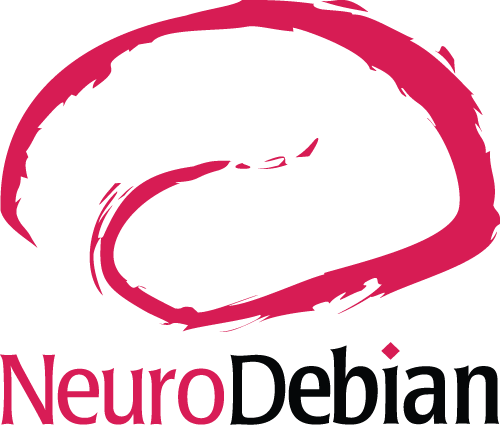
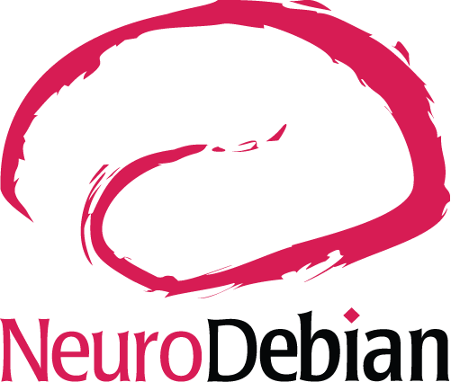
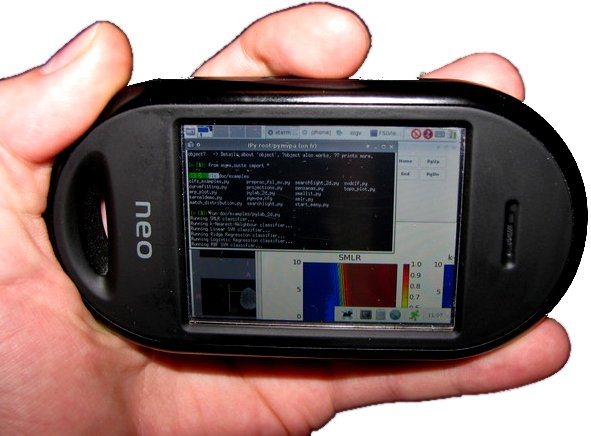

An Integrated and Trusted Scientific and Statistical Computing Core
Yaroslav O. Halchenko @yarikoptic @yarikoptic
|
|
Center for Open Neuroscience
Department of Psychological and Brain Sciences Center for Cognitive Neuroscience Dartmouth College |
Live slides/Sources (Git repo - add /.git): http://datasets.datalad.org/repronim/artwork/talks/webinar-2020-reprocomp/
 



Who am I?

Brief Bio
Born in Siberia (RSFSR, USSR), Grew up in Ukraine, Matured in U.S.A.
- -1994 Physics Mathematics Gymnasium #17 (Ukraine):
Regional&State Physics and Programming competitions. MS-DOS. Borland Pascal - -1999 VSTU (Ukraine): Masters in Opto-Electronic Engineering
(@yarikoptic). State Physics and International ACM Programming competitions. Spine diagnostic apparatus. Member of "Small Academy of Science of Ukraine". SPIE. Soros Fellowship (twice). MS-DOS/Windows. Borland Pascal, Delphi - -2003 University of New Mexico: Masters in Computer Science
B.Pearlmutter. SOBI/JADE ICA for single trial MEG. Favorite course: Data structures and algorithms. Debian GNU/Linux. C, Matlab, shell. CVS - -2009 Rutgers-Newark/NJIT:
Ph.D. in Computer Science
S.Hanson. fMRI decoding (RFE SVM). RUMBA. HPC sysadmin (cfengine, PBS). M.Hanke. Debian pkg-exppsy (for FSL and PyEPL). Official Debian developer. fMRI/EEG (TRANS)fusion. PyMVPA. C++, Python. SVN, GIT. 1 wife, 3 kids - - NOW Dartmouth College, PBS Department:
Postdoc, Scientist, Research Assistant/Associate Professor
J.Haxby. PyMVPA (Hyperalignment, ...), NeuroDebian, DataLad, ReproNim, DANDI, ... Chicken Coop, ... CON:


Applicable across different modalities
And even for integrating across modalities
TRANSFusion: EEG fMRI mapping
And others could take advantage of it:

Overall:
Unification of data structures and interfaces in PyMVPA allowed for integration across methodologies, software implementations, and data modalities.But it brought a challenge:
"... The PyMVPA manual has a picture of a dude performing pattern-classification on fMRI data with his freaking cellphone. Awesome. If you can do it on a cellphone, then I'm set".
I have a computer (MAC).
Hours later, I'm wrestling with MAC OS (Leopard) ...
PyMVPA follow up: 12.5 hours to happy time
http://kvaden.blogspot.com/2009/03/installing-pymvpa-on-leopard-mac-os.html
Solution to system integration challenge:

More detail on why and how:

Halchenko, Y. O. and Hanke, M. (2012). Open is not enough. Let’s take the next step: An integrated, community-driven computing platform for neuroscience. Frontiers in Neuroinformatics, 6(00022). PMC3458431